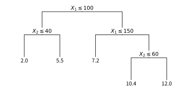

第 1 題
A regression tree is built based on two predictors using cost complexity pruning. Cross-validation is used to select the best value of \(\alpha\).
For \(\alpha=5\), the following tree is built based on the training data:

The test data is
| \(X_1\) | \(X_2\) | \(Y\) |
|---|---|---|
| 70 | 45 | 4 |
| 110 | 50 | 10 |
| 160 | 70 | 11 |
| 180 | 40 | 13 |
Calculate the mean squared prediction error on the test data.
(A) 4.5
(B) 5.5
(C) 6.5
(D) 7.5
(E) 8.5
看中文題意（不影響作答）
\(\alpha=5\) 時由訓練資料得到上圖的迴歸樹。用 4 筆測試資料（見表）計算預測均方誤差。
答案
(A)
解析
逐筆沿樹走（條件成立走左）：
- \((70,45)\)：\(X_1\le100\) 是→\(X_2\le40\) 否→5.5。
- \((110,50)\)：\(X_1\le100\) 否→\(X_1\le150\) 是→7.2。
- \((160,70)\)：否→否→\(X_2\le60\) 否→12.0。
- \((180,40)\)：否→否→\(X_2\le60\) 是→10.4。
\[\text{MSE}=\frac{(4-5.5)^2+(10-7.2)^2+(11-12.0)^2+(13-10.4)^2}{4}=\frac{2.25+7.84+1+6.76}{4}=4.4625\]
易錯
題目開頭的「交叉驗證、\(\alpha=5\)」只是背景，這題只要讀樹算誤差。
對應章節